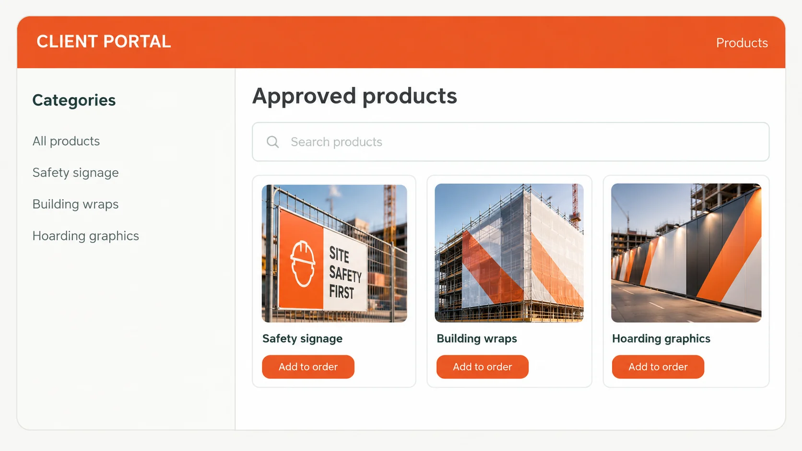

Making ordering easier
A more convenient way for existing customers to order, designed to build stronger relationships and encourage repeat business.
An ordering experience that feels like their own.
Illustrative concepts adapted from my original designs. No confidential client information is shown.
Welcome back.
Everything your team needs to order approved site branding.
Recent portal orders
Site signage package
Building wrap graphics
Project safety signs
Favourite products
Approved building wraps
Site entry signs
Hoarding graphics
Saved orders
Project establishment pack
Standard safety signs
Need something else?
Request a custom product or quote.

Review your order
Illustrative, non-functional visual concepts. Generic names and example products are used. Portal development is ongoing.
Meet customers where they want to buy.
Digital buying is already a significant part of B2B procurement. Our opportunity is to apply that convenience to enterprise signage accounts, with approved products and a purchasing experience designed around each customer's business.
Independent industry research and a manufacturer case study, not Sitemax performance results or forecasts.
Making it easier to stay and buy again.
Building a familiar ordering process around approved products, previous orders and customer workflows creates practical reasons to buy again.
Illustrative goals to assess after launch, not measured results or approved company forecasts.
Removing friction from procurement
For enterprise construction clients, ordering signage and site branding can involve repeated enquiries, approvals and back-and-forth communication. We saw an opportunity to make purchasing more convenient for existing customers and give them more reasons to keep ordering through Sitemax.
The concept
A secure ordering experience tailored to each client's organisation, giving their teams access to approved products, agreed pricing and previous portal orders. The aim is to make routine purchasing simpler while maintaining consistent branding across projects.
My contribution
I'm leading the development and working with my team to define the customer experience, commercial objectives, platform scope and functional requirements. I also created a visual mockup to communicate the concept before handing the specification to external developers.
What the portal is designed to achieve
- Make purchasing and repeat ordering easier for project teams
- Give customers a familiar, company-branded ordering experience
- Improve administrative efficiency and reduce ordering errors
- Strengthen customer experience, retention and repeat business
The concept, scope and mockup have been developed. The platform has not launched, so customer adoption and commercial outcomes are not yet available.
Want to know more?
I'm happy to talk through the thinking, challenges and collaboration behind this work. Get in touch